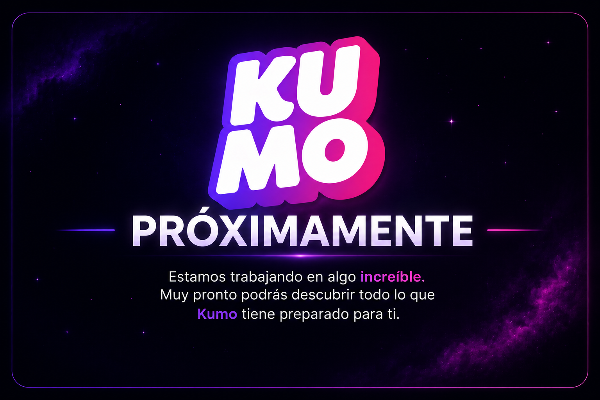
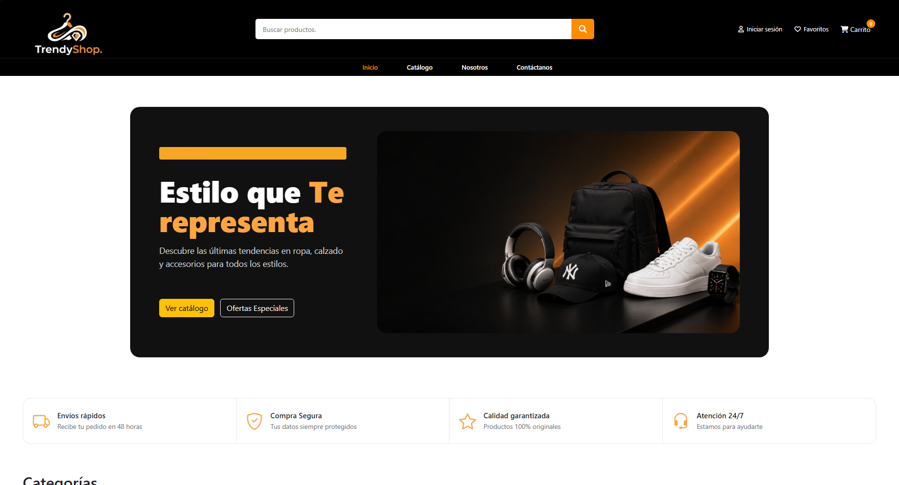
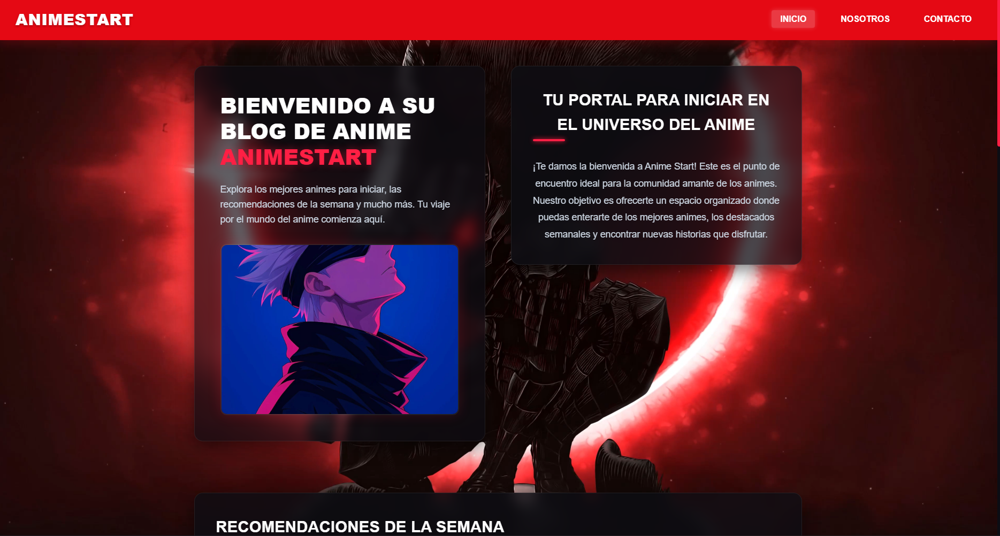
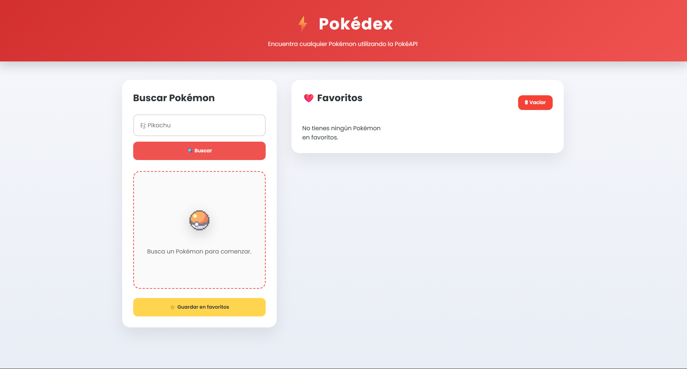
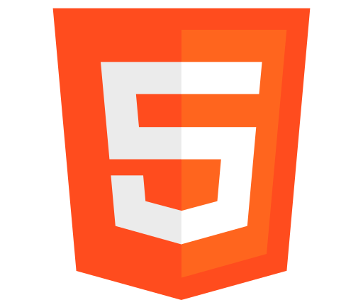
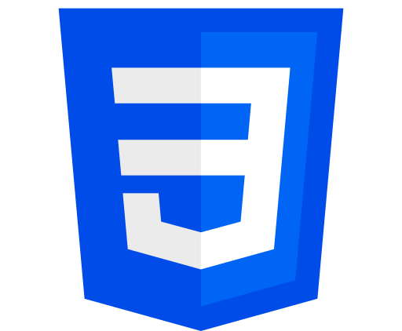
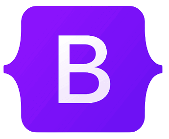
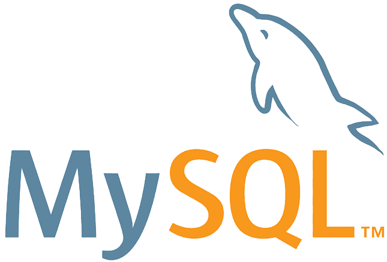
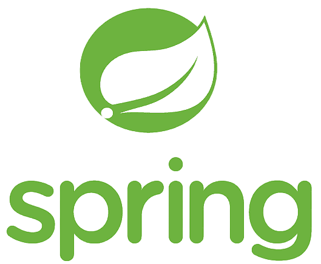

Hola, mi nombre es
Daniel Casas
Desarrollador Web
"El límite para crear está más allá del cielo..."

Sakura 🐱
Mi primera compañera de viaje.
SOBRE MÍ
El comienzo del viaje
Mi camino en el desarrollo comenzó con una sencilla curiosidad, entender cómo funcionan las aplicaciones y plataformas que usamos cada día. Lo que empezó como el deseo de comprender la tecnología terminó convirtiéndose en una pasión por entenderla y crearla.
Cada proyecto, cada error y cada nuevo aprendizaje me ha permitido crecer no solo como desarrollador, sino también como una persona que disfruta resolver problemas y encontrar soluciones, en lo personal programar significa aprender constantemente, experimentar y transformar ideas en experiencias que puedan ser útiles para otras personas.
Actualmente busco seguir construyendo proyectos que representen nuevos retos, colaborar con equipos donde pueda aportar valor y continuar evolucionando como desarrollador, estoy seguro de que siempre existe algo nuevo por descubrir, aprender y que el mejor código es el que nunca deja de mejorar.
"El límite para crear está más allá del cielo..."
MI RECORRIDO
Cada paso ha sido importante en mi historia.
Todo comenzó con la curiosidad por entender cómo funcionaba la tecnología. Desde entonces, cada estudio, experiencia y proyecto ha representado un nuevo paso que me ha permitido crecer como desarrollador y continuar explorando nuevos retos.
Paso 01
Tecnólogo ADSI
Servicio Nacional de Aprendizaje - SENAFormación como Tecnólogo en Análisis y Desarrollo de Sistemas de Información, adquiriendo bases sólidas en programación, bases de datos, análisis de requisitos y desarrollo de software.
Paso 02
Experiencia Profesional
Soporte y documentación técnicaParticipé en el análisis y seguimiento de incidencias, documentación de errores, elaboración de manuales técnicos y apoyo funcional para plataformas empresariales, fortaleciendo habilidades de comunicación, resolución de problemas y trabajo colaborativo.
Paso 03
Formación Complementaria
Cursos y aprendizaje continuo- Análisis Exploratorio de Datos con Python.
- Conceptualización de C++.
- Visual Studio Code para Desarrollo.
- Aprendizaje constante mediante proyectos personales y documentación oficial.
Paso 04
Bootcamp Java Full Stack
Generation Colombia 🚀 Dando el pasoFormación intensiva enfocada en el desarrollo Full Stack con Java, fortaleciendo conocimientos en Spring Boot, APIs REST, bases de datos, metodologías ágiles y trabajo colaborativo mediante proyectos prácticos.
Paso 05
Ingeniería de Sistemas
Universidad Nacional Abierta y a Distancia (UNAD) 🚀 Dando el pasoActualmente cursando tercer semestre, ampliando mis conocimientos en ingeniería de software, arquitectura de sistemas, algoritmos, estructuras de datos y desarrollo de soluciones tecnológicas.
ESTADO ACTUAL
Tecnologías y fortalezas
Después de cada paso dado, este es mi estado actual como desarrollador y las habilidades que continúo fortaleciendo.
Especialidad
Habilidades
PROYECTOS
Misiones completadas
Cada proyecto representa un nuevo reto superado y una oportunidad para seguir creciendo como desarrollador. Estos son algunos de los trabajos que mejor reflejan mi aprendizaje y las tecnologías que utilizo para convertir ideas en realidad.

LOG 01
E-commerce
Kumo
Plataforma web de comercio electrónico enfocada en productos de anime. Permite explorar un catálogo organizado, gestionar productos y ofrecer una experiencia moderna y responsive.

LOG 02
E-commerce
TrendyShop 2.0
Modernización colaborativa de una tienda online mejorando la navegación, el diseño y la experiencia del usuario mediante una interfaz responsive.

LOG 03
Web colaborativa
AnimeStart
Blog desarrollado en equipo bajo metodología Scrum para compartir contenido relacionado con el mundo del anime mediante una interfaz moderna y adaptable.

LOG 04
API REST
Pokédex
Aplicación web que consume la PokéAPI para consultar información de cualquier Pokémon y administrar favoritos utilizando LocalStorage y JavaScript.
TECNOLOGÍAS
Herramientas que me ayudan a convertir ideas en realidad
Cada tecnología que ves aquí ha formado parte de mi camino como desarrollador, gracias a ellas he podido transformar ideas en proyectos, superar nuevos retos y descubrir diferentes formas de resolver problemas. Sé que aún queda mucho por aprender, por eso disfruto seguir estudiando, practicando y explorando nuevas herramientas que me permitan crecer cada día y construir soluciones cada vez mejores.

HTML5
CSS3 JavaScript
JavaScript
 Java
Java
 PHP
PHP

Bootstrap
MySQL
Spring BootKiara ☄️
Siempre conmigo.
Nami 🚀
Exploradora del universo.
Luffy 🌙
Capitán espacial.
Sanji ☀️
Guardían de la galaxia.
CONTACTO
¿Comenzamos una nueva misión?
Gracias por acompañarme en este recorrido. Si tienes una idea, una oportunidad, un proyecto o simplemente quieres saludar, estaré encantado de leer tu mensaje, siempre estoy abierto a aprender, colaborar y afrontar nuevos desafíos.
Gracias por acompañarme en este viaje.
El universo siempre tiene espacio para una nueva idea. 🌙